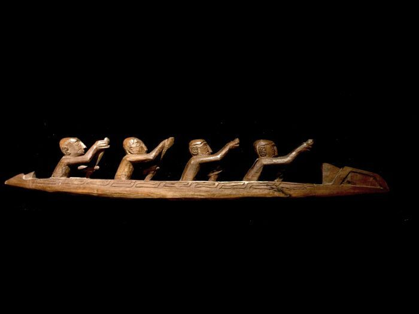

// Seni Rupa
Ukiran Asmat

Mbis - Tiang Leluhur
Mbis adalah tiang ukir monumental suku Asmat yang dibuat untuk menghormati leluhur yang telah meninggal. Tingginya bisa mencapai 8 meter, dipahat dari satu batang pohon mangrove pilihan.
Setiap lekukan dan motif pada Mbis adalah doa. Narasi visual tentang perjalanan jiwa menuju dunia roh. Museum of Modern Art New York dan Metropolitan Museum memiliki koleksi ukiran Asmat terkemuka.

Perahu Wuramon
Selain Mbis, suku Asmat juga dikenal dengan ukiran pada perahu Wuramon. Perahu ini adalah karya seni hidup yang membawa cerita leluhur di setiap kayuhannya.
Motif khas: sosok manusia stilisasi, capung, serangga, dan geometri simetris yang mencerminkan pandangan dunia Asmat tentang keseimbangan antara yang hidup dan yang telah pergi.